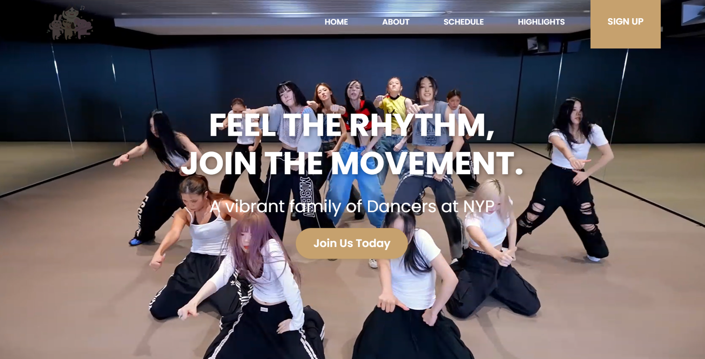
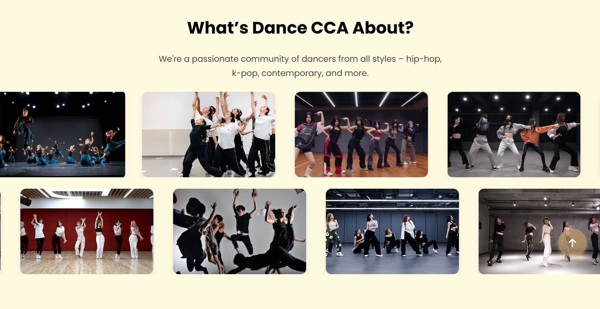
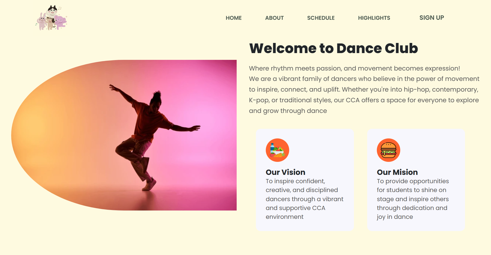
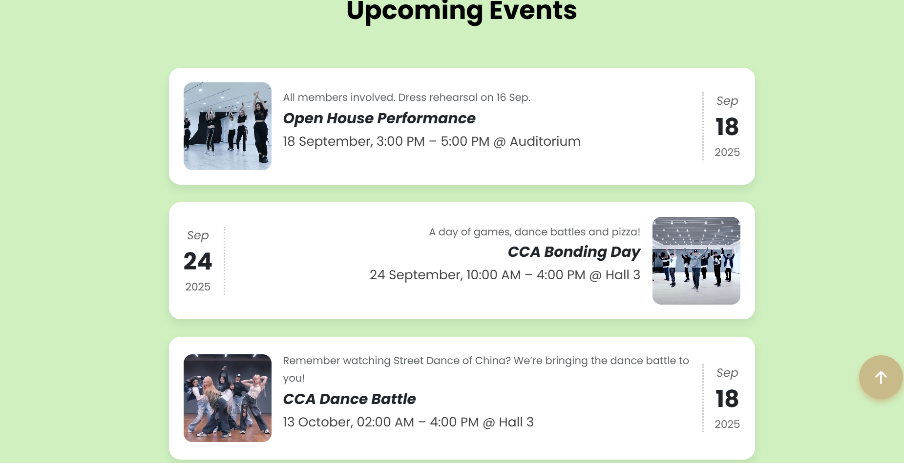
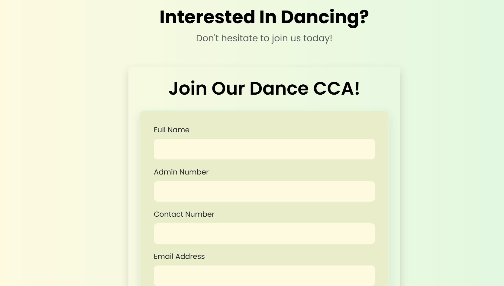

Front-end development · UI design & build
Dance CCA Website
A responsive front-end website introducing a dance club through performances, activities, schedules, and a clear joining path.

Original Dance CCA project screenshot.
The design challenge
A CCA website should give prospective members a quick sense of the club: what it does, what its culture feels like, and where to find activities or joining information.
This project uses a visual-first, youth-friendly approach to introduce a dance club without burying useful information under too much text.
My front-end work
- Page layout: built the front-end interface using HTML, CSS, and Bootstrap.
- Content hierarchy: organized the hero, about, schedule, activities, gallery, and joining sections so visitors can scan the page.
- Visual consistency: used coordinated colors, typography, buttons, cards, and spacing.
- Responsive design: adapted the layouts and components for different screen sizes.
Helping a visitor explore the club
- Introduce the clubA clear hero section establishes the identity and gives visitors a starting point.
- Show the experienceActivities and gallery sections make performances and club culture easier to understand.
- Make the next step clearSchedule and joining sections guide a visitor towards practical information.
The contact / join form is presented as a static interface component in the project showcase.
What I learned
A visually engaging website still needs clear structure. I focused on making the content readable, keeping components consistent, and using responsive layouts rather than treating mobile as an afterthought.
My takeaway: color and imagery can express a club’s personality, while spacing and hierarchy help visitors find what they need.
A next iteration
I would test navigation and readability on smaller screens and review the accessibility of the joining form before connecting it to a real submission service.
The website screens



View larger

View larger

View larger

View largerLet's build something useful.
I'm open to IT internships where I can contribute, learn from a team, and turn ideas into practical work.